Label matching in existing semistructured query languages is straightforward. The descriptor is typically a single word or phrase that is compared, using string comparison, to the label. For example, in the regular expression (person | employee).name?, the descriptors, the basic building blocks of the regular expression, are person, employee, and name. During evaluation of this expression, the descriptor person would only match a label person on an edge. More flexible string comparisons between descriptors and labels are supported in some languages, such as Lorel [3], which reuse the wildcard operator `%' from SQL. The descriptor per% would match any label that starts with `per'.
The semantics of label matching is more involved in our model since each label is a set of properties. In addition, string comparison is insufficient because many properties are not strings. These complications are addressed in the label match operation LaMa , defined below. In general, operation LaMa succeeds if every individual property in the descriptor has a match in the label or is missing from the label. Extra properties in the label are ignored, and different
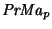
operations are used for different properties, p. Note that the descriptor is a label in the operator definition.There are three cases to consider. (1) A required property in one label is missing from the other label. In this case, the match does not succeed. A required property must be present in both labels. (2) A non-required property in one label is missing from the other label. In this case, the match succeeds because missing properties are treated as don't care information. (3) The property is present in both labels. The predicate, specific to the property is used to determine if the property values match. Required and non-required properties are treated the same.
[
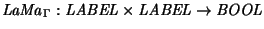
]Label
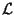
is matched against label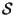
as follows. LaMa depends on the semantics of the properties as specified in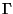
, since properties in the labels are individually matched.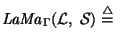
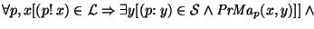
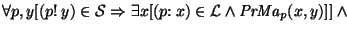
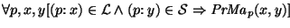
`2
The property-specific predicate matches two property values. For example, equality may be used for name, and time interval overlaps may be used for transaction time. See Table 1.
label that follows requires a movie description.
In Figure 2, there are two labels with a movie name property. One describes &Color of Night; the other, &Star Wars IV.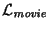
:= {(name! movie)}
These labels are matched as follows.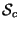
:= {(name: movie), (security! over 18)}
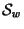
:= {(name: movie), (trans. time: [31/Jul/1998 - uc])}
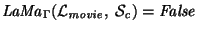
; the required security, over 18, is missing from .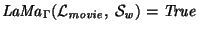
; the extra transaction time property in is ignored.Operation LaMa is the basis for interpreting regular expressions of descriptors. Generally, these regular expressions are interpreted exactly as in other semistructured query languages, and the usual regular expression operations (+, *, ?, |, and . for sequencing) have their usual meaning. The only essential difference between our language and standard semistructured query languages is that the matched path is checked to ensure that it is valid. The following operation extends a set of paths in a semistructure, if the sequence of labels on an extended path matches the regular expression and the entire path is valid.
[
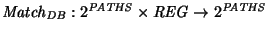
]Let S be a set of starting paths (typically the roots of the semistructure) and X be a regular expression over an alphabet of (extended) labels. Then X is said to match a path in
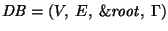
by extending a path in S as follows.the definition, the matcher M extends a path in S by recursively decomposing a path regular expression (the expression unifies with the second argument). The matcher extends a standard semistructured database matcher to use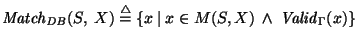
,
where the matcher, M, is defined as follows.
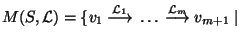
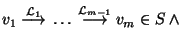
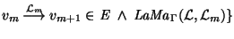
M(S, X.Y) = M(M(S, X), Y)
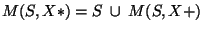
M(S, X+) = M(S, X.X*)
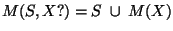
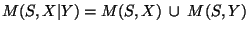
`
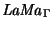
to match individual labels, as discussed above.We note that the presence of cycles in the semistructure can lead to an infinite result set, just like matching in any semistructured query language. Consequently, when this operation is implemented, some strategy must be adopted to either break cycles (e.g., node marking is used for Lorel) or otherwise generate a finite result sets (e.g., stop after the first N matches). Which strategy to use is a decision best left to a language designer; AUCQL uses node marking to break cycles.
The cost of Match is essentially the same as path matching in a normal semistructured database: at worst the entire semistructure is explored. The path validity can be computed as each path is explored, although it costs an extra factor of
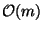
, where m is the number of properties in a label.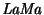
is also an operation, assuming that the properties in a label are sorted or hashed. So overall, the cost of matching in our framework grows by a factor of the size of each label.Sometimes only the set of final nodes in a set of paths is desired.
[
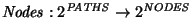
]Let P be a set of paths.
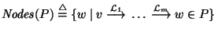
`
A user is interested in retrieving information about movie stars as of 31/Jul/1998. That set of nodes can be obtained as follows.
:= {(name! movie),
(trans. time: [31/Jul/1998 - 31/Jul/1998])}
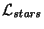
:= {(name! stars),
(trans. time: [31/Jul/1998 - 31/Jul/1998])}
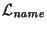
:= {(name! name),
(trans. time: [31/Jul/1998 - 31/Jul/1998])}
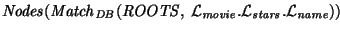
Recall that ROOTS is the set of edges from
 to roots in the semistructure. The regular expression in this
example is a sequence of descriptors. In each descriptor, the name is required (so an edge without a name will not
match), but the transaction time is not required (an edge that is
missing a transaction time is presumed to exist at all transaction
times). Properties not mentioned in the descriptor are ignored in the
path matching, unless the property is required, in which case the label
is not matched.
to roots in the semistructure. The regular expression in this
example is a sequence of descriptors. In each descriptor, the name is required (so an edge without a name will not
match), but the transaction time is not required (an edge that is
missing a transaction time is presumed to exist at all transaction
times). Properties not mentioned in the descriptor are ignored in the
path matching, unless the property is required, in which case the label
is not matched.
It is instructive to consider four paths in Figure 2.
(1) The path through &Color of Night to the misspelled
value Bruce Wilis is not matched since the required level
of security (over 18) is missing from the descriptors. The
user must have a digital certificate that
authenticates her or him as being over 18, and must add that to the first
descriptor to match that edge.
(2) The path through &Color of Night to the value Bruce Willis is also not matched for the same reason.
(3) The path through &Star Wars IV to the misspelled value
Bruce Wilis matches the regular expression, but is not a
valid path (see Example 3.7).
(4) The path through &Star Wars IV to the value Bruce
Willis is the only path that both matches the regular
expression and is a valid path.
 2
2